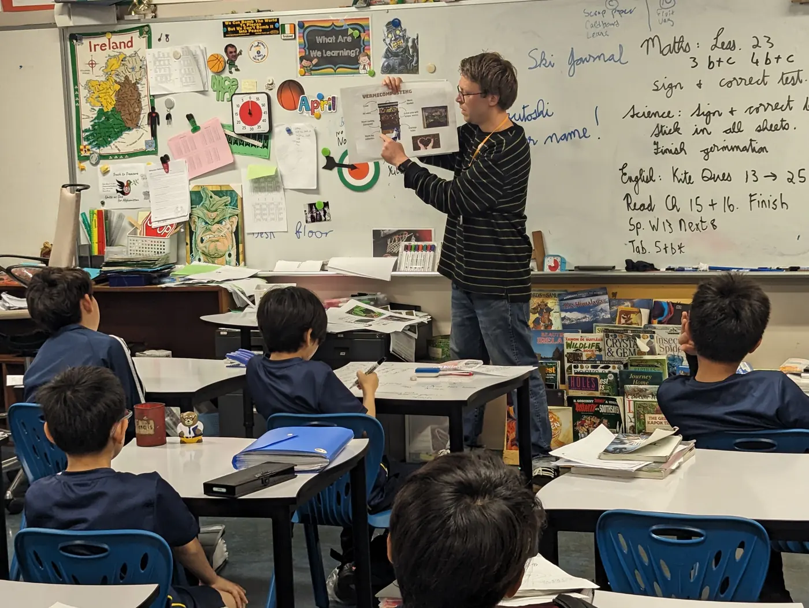

概要
学校の既存の理科や教科横断型カリキュラムに直接組み込む、複数週にわたるプログラムを設計します。単発の追加授業ではなく、水をテーマにしたIPCの単元、植物生物学を扱うFOSSのモジュール、学校全体のサステナビリティの取り組みなど、学校の学習目標に沿って各回を組み立てます。水耕栽培システム、教材、専門知識は私たちが持ち込み、生徒は授業で学んでいる内容を、実際に育てる体験を通して深めます。
カリキュラムとの連携
水循環を扱う「On Tap」をはじめとするIPCの単元、エネルギーと光のモジュール、栄養と健康の単元などと連携した実績があります。必要に応じてNGSSやFOSSの基準にも合わせます。プログラム開始前に、カリキュラムコーディネーターや学年チームの先生方と打ち合わせ、スケジュールと学習目標に合わせて内容を組み立てます。学年に合わせて、内容の深さ、語彙、評価方法も調整します。
プログラムの形式
プログラムは最少5回から、1学期間の毎週訪問まで対応します。標準的なプログラムは1回45〜60分で6〜8回、1つの学年を対象に週1回行います。スケジュールを調整して、複数の学年やクラスで実施することもできます。大規模なプログラムでは、講師と機材を追加して対応します。
料金
1回¥20,000をベースに、5回のプログラムで¥100,000から。料金はプログラムの期間、クラス数、内容によって変わります。教材、機材、指導料はすべて含まれ、すべて込みの料金でご提示します。